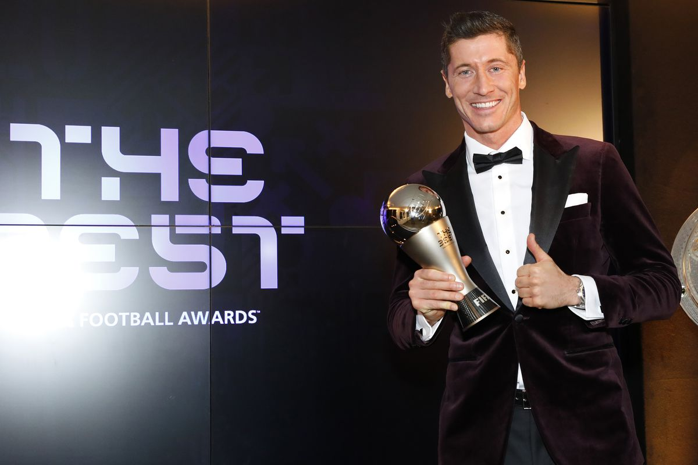
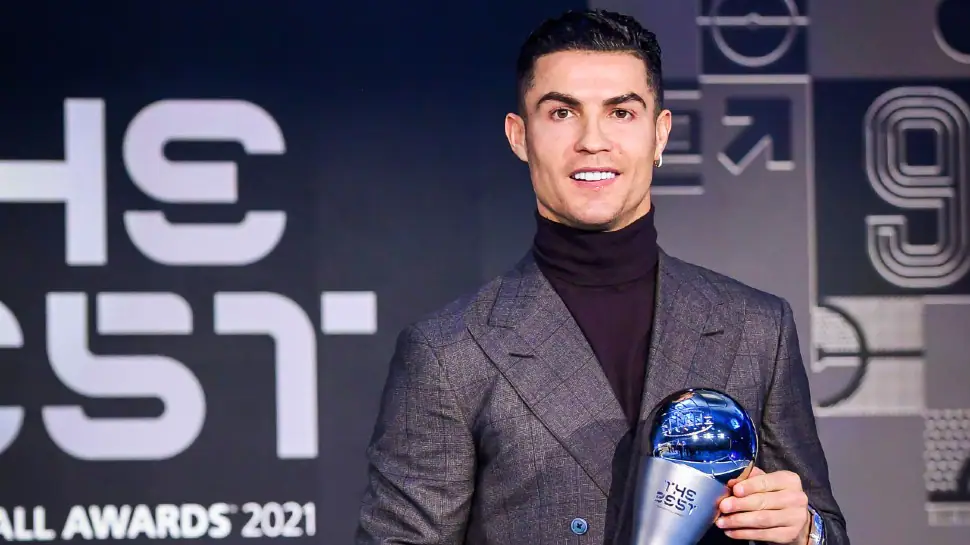

The Ballon d'Or is an annual football award presented by French news magazine France Football.
It has been awarded since 1956, although between 2010 and 2015, an agreement was made with FIFA,
and the award was temporarily merged with the FIFA World Player of the Year (founded in 1991)
and known as the FIFA Ballon d'Or. However, the partnership ended in 2016, and the award reverted
to the Ballon d'Or, while FIFA also reverted to its own separate annual award The Best FIFA Men's
Player. The recipients of the joint FIFA Ballon d'Or are considered as winners by both award
organisations.
Conceived by sports writer Gabriel Hanot, the Ballon d'Or award honours the male player deemed
to have performed the best over the previous year, based on voting by football journalists, from
1956 to 2006. After 2007, coaches and captains of national teams were also given the right to vote.
Originally, it was awarded only to players from Europe and widely known as the European Footballer
of the Year award. In 1995, the Ballon d'Or was expanded to include all players from any origin
that have been active at European clubs. The award became a global prize in 2007 with all
professional footballers from around the world being eligible.

Stanley Matthews of England was the inaugural winner of the Ballon d'Or. Prior to 2007, the award
was generally known as the continental European Footballer of the Year award in English language
and much international media. Even after 2007, it was usually identified with and referred to by
that name because of its origin as a European award, until it was merged with FIFA's World Player
award cementing its new worldwide claim. Liberia's George Weah, the only African recipient, became
the first non-European to win the award in 1995, the year that rules of eligibility were changed
for the first time. Ronaldo of Brazil became the first South American winner two years later.
The second rule change in 2007 to include players from all continents did not bring up new winners,
as all recipients since then have still exclusively been active in Europe during their win.
Lionel Messi has won the award a record seven times, followed by Cristiano Ronaldo with five.
Three players have won the award three times each: Johan Cruyff, Michel Platini, and Marco van
Basten. With seven awards each, Dutch, German, Argentine and Portuguese players have won the most
Ballons d'Or. Players from Germany (1972, 1981) and the Netherlands (1988) were the only to take
all three top spots in one year, with German (1972) and especially Italian clubs (1988–1990)
achieving the same feat, including two years solely made up of AC Milan players (1988, 1989), a
unique record until Spanish clubs experienced an unforeseen dominance (2009–2012, 2015, 2016)
and Barcelona (2010) became the second club with three top players. Two Spanish clubs, Barcelona
and Real Madrid, also lead the ranking for employing the most winners, with twelve and eleven wins.
Eight players (Bobby Charlton, Franz Beckenbauer, Gerd Müller, Paolo Rossi, Zinedine Zidane,
Rivaldo, Ronaldinho, and Kaká) have won the FIFA World Cup, the European Cup/UEFA Champions
League, and the Ballon d'Or during their careers.
In 2020, the Group L'Équipe, to which France Football belongs, decided that no award would be
given for the year due to the COVID-19 pandemic cutting short the seasons of football clubs
worldwide.
| Player | Winner |
|---|---|
| Lionel Messi | 7 (2009, 2010, 2011, 2012, 2015, 2019, 2021) |
| Cristiano Ronaldo | 5 (2008, 2013, 2014, 2016, 2017) |
| Michel Platini | 3 (1983, 1984, 1985) |
| Johan Cruyff | 3 (1971, 1973, 1974) |
| Marco Van Basten | 3 (1988, 1989, 1992) |
The European Golden Shoe, also known as European Golden Boot, is an award that is presented each season to the leading goalscorer in league matches from the top division of a European national league. The trophy is a sculpture of a football boot. From its inception in the 1967–68 season, the award, originally called "Soulier d'Or", which translates from French as Golden Shoe or Boot, has been given to the top goalscorer in all European leagues during a season. Since 1997, it has been calculated using a weighting in favour of the highest ranked leagues. Originally presented by L'Équipe magazine, it has been awarded by the European Sports Media since the 1996–97 season. Lionel Messi has won the award a record six times, all while playing for Barcelona.

Between 1968 and 1991, the award was given to the highest goalscorer in any European league.
This was regardless of the strength of the league in which the top scorer played and the number
of games in which the player had taken part. During this period Eusébio, Gerd Müller, Dudu
Georgescu and Fernando Gomes each won the Golden Shoe twice.
Following a protest from the Cyprus FA, which claimed that a Cypriot player with 40 goals should
have received the award (though the official top scorers for the season are both listed with 19
goals), L'Équipe issued no awards between 1991 and 1996.
Since the 1996–97 season, European Sports Media have awarded the Golden Shoe based on a points system
that allows players in tougher leagues to win even if they score fewer goals than a player in a
weaker league. The weightings are determined by the league's ranking on the UEFA coefficients,
which in turn depend on the results of each league's clubs in European competition over the previous
five seasons. Goals scored in the top five leagues according to the UEFA coefficients list are
multiplied by a factor of two, goals scored in the leagues ranked 6 to 22 (previously 9 to 21)
are multiplied by a factor of 1.5, and goals scored in leagues ranked 22 and below are multiplied
by a factor of 1. Thus, goals scored in higher ranked leagues will count for more than those
scored in weaker leagues. Since this change, there have only been two winners who were not
playing in one of the top five leagues (Henrik Larsson, 2000–01 Scottish Premier League and Mario
Jardel, 1998–99 Primeira Divisão and 2001–02 Primeira Liga).
Although the Golden Shoe could be shared among multiple players in the past, in the 2019–20 season
this rule was changed to give the award to the player with the least minutes played, should there
be a tie on points. If tie persists, number of league assists and, then, the less penalties scored,
would be counted. Only in case tie ultimately persists, the award would be shared.
| Player | Winner |
|---|---|
| Lionel Messi | 6 (2009–10, 2011–12, 2012–13, 2016–17, 2017–18, 2018–19) |
| Cristiano Ronaldo | 4 (2007–08, 2010–11, 2013–14 (shared), 2014–15) |
| Eusebio | 2 (1967–68, 1972–73) |
| Gerd Muller | 2 (1969–70, 1971–72) |
| Luis Suarez | 2 (2013–14 (shared), 2015–16) |
The Best FIFA Men's Player is an association football award presented annually by the sport's governing body, FIFA, to the world's best men's player since 2016. The award was formerly known as the FIFA World Player of the Year, which was merged with France Football's Ballon d'Or in 2010 to become the FIFA Ballon d'Or in a six-year partnership.
 In 2010, the FIFA World Player of the Year award combined with the Ballon d'Or to create the
FIFA Ballon d'Or in a six-year partnership. FIFA presided over the FIFA Ballon d'Or after agreeing
to pay £13million for the merge of the two major player awards with France Football. The six
editions of the FIFA Ballon d'Or were dominated by Lionel Messi and Cristiano Ronaldo, as part of
their ongoing rivalry. In 2016, the Ballon d’Or again lost its ‘FIFA’ tag and would be voted for
exclusively by journalists, while the FIFA World Player of the Year award — which ran from 1991
to 2009 — was resurrected, this time as The Best FIFA Men's Player.
According to reports, FIFA's decision not to renew the deal was made in order to improve the
organization's strained relationship with England's FA. This was based on the fact the annual
ceremony was held in Zürich – and new FIFA president Gianni Infantino wanted to move the next one to London.
The trophy was designed by Croatian artist Ana Barbić Katičić.
The selection criteria for the players of the year are sporting performance, as well as general
conduct on and off the pitch. The votes are decided by media representatives, national team coaches,
and national team captains. In October 2016, it was announced that the general public would also
be allowed to vote. Each group has 25% of the overall vote.
| Player | Winner |
|---|---|
| Cristiano Ronaldo | 2 (2016, 2017) |
| Robert Lewandowski | 2 (2020, 2021) |
| Lionel Messi | 1 (2019) |
| Luka Modric | 1 (2018) |
The FIFA World Player of the Year was an association football award presented annually by the
sport's governing body, FIFA, between 1991 and 2015. Coaches and captains of international teams
and media representatives selected the player they deem to have performed the best in the previous
calendar year.
Originally a single award for the world's best men's player, parallels awards for men and women
were awarded from 2001 to 2009. The men's award was subsumed into the FIFA Ballon d'Or in 2010
while the women's award remained until 2015. After 2015 both men's and women's awards became part
of The Best FIFA Football Awards.
During the men's era, Brazilian players won 8 out of 19 years, compared to three wins – the second
most – for French players. In terms of individual players, Brazil again led with five, followed by
Italy and Portugal with two each. The youngest winner was Ronaldo, who won at 20 years old in 1996,
and the oldest winner was Fabio Cannavaro, who won aged 33 in 2006. Ronaldo and Zinedine Zidane
each won the award three times, while Ronaldo and Ronaldinho were the only players to win in
successive years. From 2010 to 2015, the equivalent men's award was the FIFA Ballon d'Or, following
a merging of the FIFA World Player of the Year and the France Football Ballon d'Or awards. Since
2016, the awards have been replaced by The Best FIFA Men's Player and The Best FIFA Women's Player
awards.
The winners are chosen by the coaches and captains of national teams as well as by international media representatives invited by FIFA. In a voting system based on positional voting, each voter is allotted three votes, worth five points, three points and one point, and the three finalists are ordered based on total number of points. Following criticism from some sections of the media over nominations in previous years, FIFA has since 2004 provided shortlists from which its voters can select their choices.
| Player | Winner |
|---|---|
| Zinedine Zidane | 3 (1998, 2000, 2003) |
| Ronaldo | 3 (1996, 1997, 2002) |
| Ronaldinho | 2 (2004, 2005) |
| Lionel Messi | 1 (2009) |
| Cristiano Ronaldo | 1 (2008) |
The FIFA Puskás Award is an award established on 20 October 2009 by the Fédération Internationale
de Football Association (FIFA), at the behest of then-president Sepp Blatter, to be awarded to the
male or female judged to have scored the most aesthetically significant, or "most beautiful", goal
of the calendar year.
The award is in honour of Ferenc Puskás, the striker of Real Madrid during the late 1950s and the
1960s, and central member of the highly successful Hungarian side of the same era. Puskás is widely
considered by many to be the most powerful and prolific forward European football produced in
first-division football, and was honoured by IFFHS in 1997 as the best top-tier goalscorer of the
20th century. Puskás scored 511 goals in 533 games and his 84 national team's goals in 85 outings
was a world record at the time.
"It is important to preserve the memory of those footballing greats who have left their mark on
our history. Ferenc Puskás was not only a player with immense talent who won many honours, but
also a remarkable man. FIFA is therefore delighted to pay tribute to him by dedicating this award
to his memory," said Blatter at the inauguration of the award in Budapest.
Until 2018, the winner was decided completely based on voting by fans on FIFA's official website.
However, after a controversy in the 2018 award, FIFA changed the procedure. Now, the award is
decided by pundits selected by FIFA, who will choose the winner based on the top three goals voted
for by the public.
The time-frame for the first award was July 2008 to July 2009. The annual award was presented for
the first time during the 2009 FIFA World Player of the Year Gala on 21 December in Switzerland,
with Portuguese player Cristiano Ronaldo being the first prize winner.
1. It should be an absolutely beautiful goal (subjective, but decided by voting and judgement
from experts — the spread of goals should include long-range shots, team goals, rabona, overhead
kicks, individual plays, scorpion kicks, etc.).
2. It should be awarded "without distinction of championship, gender or nationality".
3. It should not be the result of luck, mistakes, deflection by another player or the player
in an offside position.
4. It should support fair play, i.e. the player should not have behaved badly in the game or have
been charged with doping, for example.
5. The player cannot be nominated with two different goals.